HOW TO MAKE A ROCKET MODEL
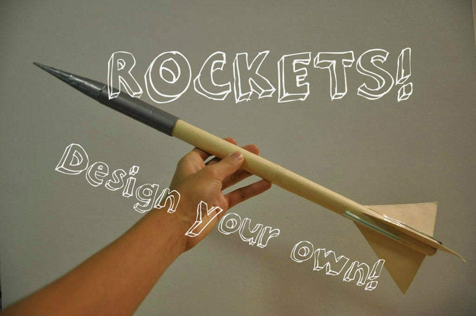
This is all you will need:
Tools:
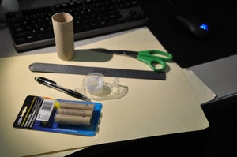
- Pencil/Marker (something to mark with)
- Ruler
- Scissors
- Compass
- Sharp knife (I used an X-Acto knife)
- Glue brush (shown in Step 5)
- hot glue gun
- needle-nose pliers
To launch your rocket and Materials:
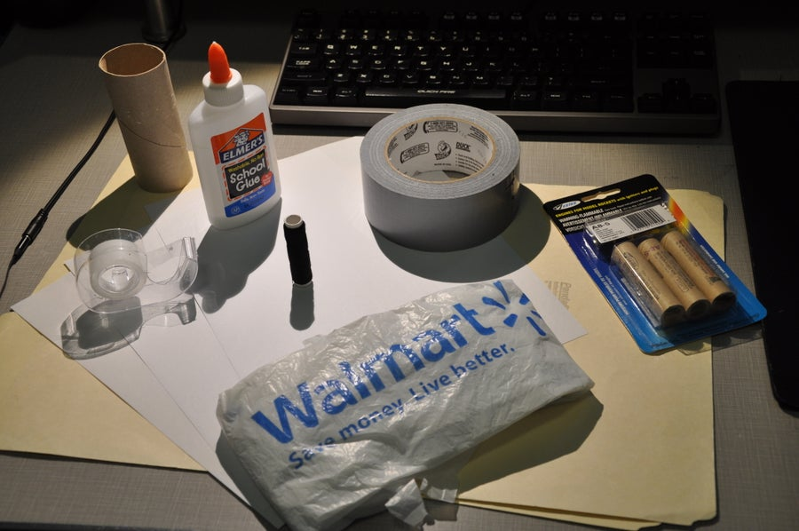
- launch pad/rod
- ignition circuit
- 2 x Manila Folders, letter-size (or more if you mess up)
- Scotch tape
- Duct tape (for structural integrity and, erm... progressive design enhancement)
- Rocket engines (although I bought Estes A8-3 engines I would recommend getting something stronger, like a B- or C-class)
Step 2: Designing Your Rocket
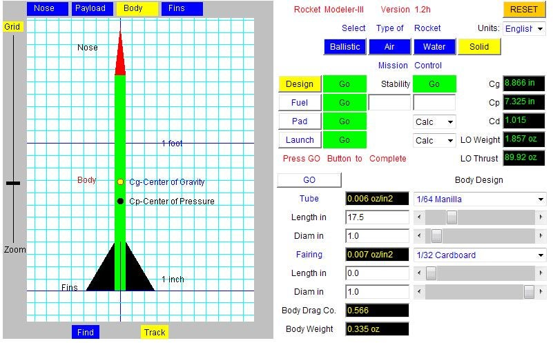
First, go to this site. This Java applet was developed by NASA and is the simplest tool to use in designing a rocket. In order to use the modeler software, you'll need to download the applet. Scroll the page down a little bit and there should be a yellow button reading "Download Applet" on the left hand side. This will link you to this page. Next, following the instructions on the page, download the .zip folder. Find the .zip folder in your files and unzip the folder. When you return to the first page, the RocketModeler applet should be able to run in your browser.
You may need to change some security settings to allow the applet to run, and if you are having trouble the site will also walk you through this. I used RocketModeler III 1.2h, but there are other versions available. If you are having problems getting the applet to work on your system you can try using the previous versions.
Once you have RocketModeler up and running, you need to first select the "Solid" fuel option at the top right hand corner of the applet. Then, go ahead and start playing with settings in order to see how different parameters change the performance of the rocket. You can toggle through the Design, Fuel, Pad, and Launch pages using the buttons in the middle of the window. On the Design page, you can switch through the menus for the various components using the tabs at the top of the rocket schematic in the top left. The settings I used can be seen in the images. I changed the length of the nose to 4 inches, and changed the thickness of the cone to 1/16 inch cardboard to match the double-manila layering of the rocket cone. I then changed the recovery system to a 1 ft parachute. On the Body tab, (I left the payload alone), I changed the material to 1/64 manila, and increased the length to 17.5 inches. Finally, on the Fins tab i changed the material to 1/64 manila, the locate in to 0, the length to 4 inches, the L.E. angle (leading edge) to 60 degrees, and the T.E. angle (trailing edge) to 0. The width of the fins automatically snapped to 2.309 in, given the parameters.
Hit the "GO" button in the middle of the page, then switch to the fuel page. Thinking I would be using a larger engine, I chose a C6-7 engine. Hit "GO" for the fuel page, and the same for the "Pad" page. On the "Launch" page, hit "Fire", and the animation of your rocket's launch will play. The applet will then supply you with the theoretical height and speed graphs that your rocket would produce. You can go back and play with the settings until you reach your desired height. Just make sure to go back through each of the Design, Fuel, and Pad pages and hit "GO". For some reason the applet won't allow you launch your rocket unless you do this before each launch.
Once you have finished your design, you can mark down the dimensions of your rocket and move on to build your rocket.
Step 3: A Note on Rocket Design.
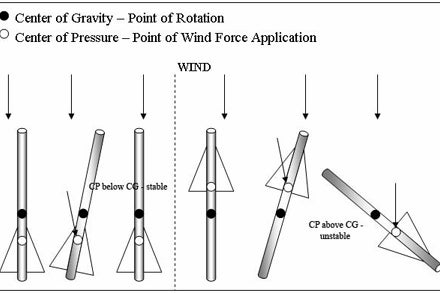
In designing your rocket, you want the Center of Pressure to be positioned below the Center of Gravity. The higher above the CP the CG is positioned, the more stable and straighter your rocket will fly.
What are these centers? The Center of Gravity is simply the center of mass of your rocket. This is the point that the rocket rotates about in flight. The Center of Pressure is the point through which the effect of drag and other wind forces affects your rocket. It's the center of the surface area of the rocket and is traditionally found by taking a cardboard cut-out of the cross-section of your rocket and finding the balance point. You can see in the diagram that if the CP is positioned above the CG, the force of drag and the wind will be able to change the flight path of the rocket by a large degree. If the CP is below the CG, the effect of drag and the wind act as stabilizing forces, helping your rocket to fly straight. By taking these points into consideration, you can design a rocket that will be stable in all conditions.
I ended up under-designing my rocket, which is why I don't recommend that you use my design. I overestimated the scale of the schematic and thought that my Center of Gravity was much farther from the Center of Pressure then it really was. In the end I had to compensate with duct tape to relocate the Center of Gravity. Spend a bit more time designing your rocket than I did!
Enough of that - let's get to building!
Step 4: Rocket Body Tube: Ready to Roll...
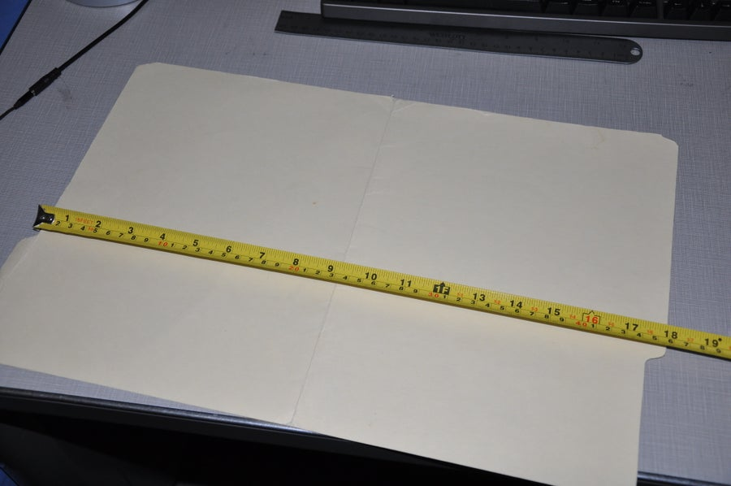
First, start with a manila folder.
You can see in the first picture that before I cut off the tabs, the length of the manila was around 17.5 inches, which is what I set the length of my body tube to be. After I cut the tabs off, I was left with a nice piece of material with clean, sharp corners. This is where we start rolling the sheet into a tube
In my experience, when you try to roll the body tube all at once, the manila just crumples up with a bunch of wrinkles. I found that running the manila over the edge of your work surface helps to progressively curve the manila without leaving any ugly folds or wrinkles. After about twenty-ish runs on the table edge, you can start using your hands to tighten the tube until its inner diameter matches that of the rocket engine. When the tube was small enough, I stuck a rocket engine in either end to help the tube keep its shape. You'll want to use tape or rubber bands to keep the tube tight while you make the glue brush in the next step.
Step 6: Nose Cone: Rolling Again
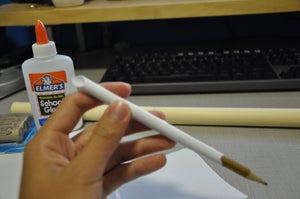
For the gluing of the rocket, you'll first want to find a brush, or make one if you don't have a random one lying around. If you just want to run a straight bead of glue on all the pieces, you could, but I found that the glue brush made applying the glue to all the various pieces much easier. Also, the pieces will dry faster with the brush because you are using less glue.
If you couldn't find a small, cheapo brush to use, you could make a brush like I did. To make the brush, I ripped off a corner piece from a sheet of paper and covered the corner with Scotch tape. This is so that the tip wont break apart from being soaked with glue. I then rolled the piece of paper around a pencil so that the corner hung off the end of the pencil. You can see in the picture that the paper forms to any surface it is pressed to, making it ideal for applying glue.
I used rubber bands to keep the body tube rolled to the right diameter, but you could use tape, clothespins, or anything else you want to help you keep the manila held tightly while gluing.
The method I used was to start with two rubber bands, one at either end of the tube. Again, I kept the rocket engines inserted to ensure a tight fit. Then, I used the glue brush to apply glue a little bit at a time to the flap of the manila. After I glued a section, I rolled a rubber band down the length of the tube and began gluing the next section, progressing up the tube until the entire thing was done. After letting it dry overnight, there were a few gaps here and there where the manila wasn't fully glued down. I used the glue brush and a little bit of pressure to stick them back in place. If you didn't glue the tube exactly evenly, there will be one side that fits the rocket engine better than the other. Mark this side as the bottom of the rocket, and the other side the top.
Finally, I used the X-acto knife to clean up any uneven bits from the ends of the tube.
Step 7: Folding the Fins
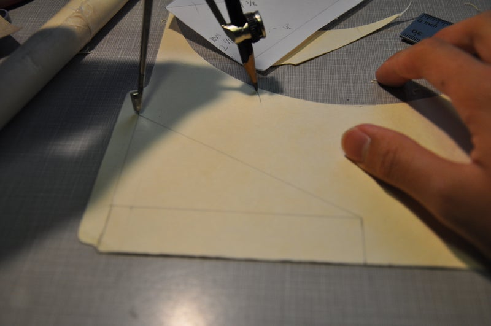
With the fins, you can use whatever method you like. I went for an idea of forming the triangular fins by folding and gluing a single piece in half.
You can see from the pictures that i originally tried to make the fins out of one single piece, but I ended up misjudging the distance between the fins and the piece was uneven when wrapped around the body tube. I ended up having to cut each of the fins individually. Even if I had measured properly, gluing would have been a nightmare with the large, unwieldy piece. Cutting it into the three individual fins was much easier.
Gluing was tricky, but I ended up just using the old glue-and-hold-with-your-fingers technique, along with some aids on corners that were tough. The fins ended up better than I expected.
Step 8: A Few Adjustments...
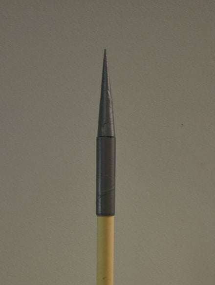
Due to my design flaws, I realized that my Center of Gravity was much too close to my Center of Pressure. You can adjust this by adding more weight to the nose-end of the rocket to move the Center of Gravity higher up. It ended up adding a good bit of weight to my rocket :( . Oh well, you learn as you go!
Step 9: Engine Retention Clip and Launch Lug
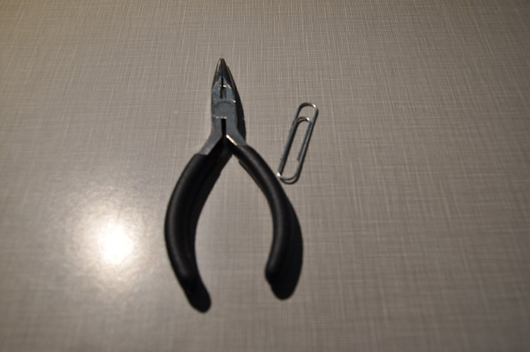
You'll also need some way of keeping the engine inside of the rocket.
I was a little worried about the engine not staying in place, so I formed a retention clip using a paper clip. I unbent the paperclip with a pair of needle-nose pliers so it was a straight piece of wire, then folded it in half. I then made a 90 degree bend at the end to hang on to the end of the engine, then taped the piece to the side of the rocket. When you launch the rocket, you'll want to wrap some tape around the engine and the clip.
The launch lug is a small cylinder which the launch rod is inserted into so that the model rocket will launch straight. I just hot-glued a length of small drinking straw to the side of the rocket and it worked perfectly.
Step 10: Parachute and Wadding: Getting to the Guts of It
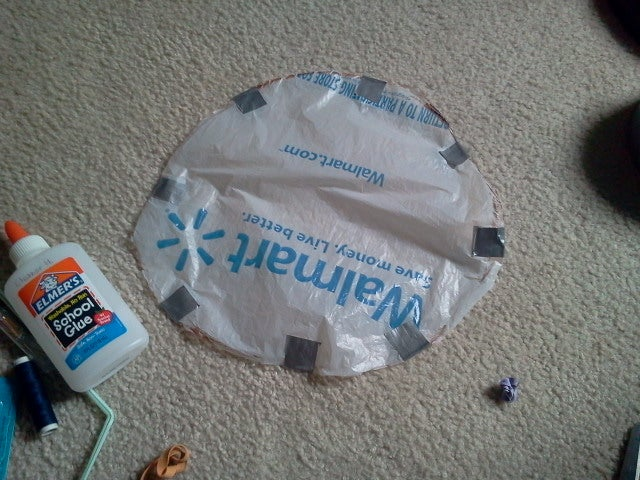
he final piece you need is to create a line so you don't lose your nose cone, and a parachute for recovery.
I cut a circle of plastic bag about 10 inches in diameter, and put 8 pieces of duct tape around the circumference of the circle. These were reinforcement for the 8 slits I cut around the circle for the parachute lines. I cut out 8 pieces of line, about a foot and a half long. You can really use any sort of thread-like material. I was in a pinch so I used dental floss! I tied the strands through the slits with a square knot, then tied all 8 lines together. After testing the parachute to make sure it worked, I folded it up and stuffed it inside the body tube. You'll want to use some recovery wadding, inflammable paper, to prevent the parachute and other internals from burning up. If you don't want to buy some, you can make your own with this Instructable. Stuff the wadding in first, then the parachute.
Finally, use a piece of line, maybe about 1 foot long, to attach the nose cone to the inside of the body tube. This is so that when the ejection charge goes off, it won't blow your nose cone away; it'll still be attached by the line.
After stuffing it all in, you're ready to go!
Step 11: ...And You're Ready to Launch! Conclusion and Reflection
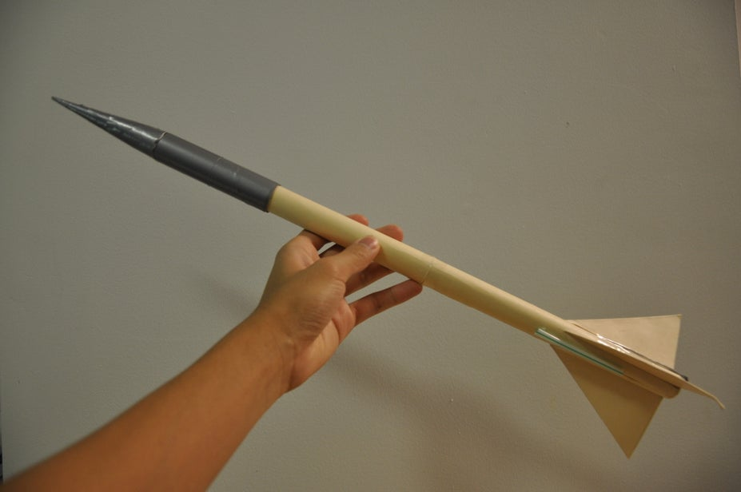
You will need a circuit to safely launch your rocket. There are plenty of resources on the internet showing you how to do this, so I won't go over it here.
All in all, this was a fun and challenging project. The rocket flew pretty well, but flopped midair due to the weak engine (Sorry, I forgot to take video). If I were to do this again, I really want to do a re-design of my rocket to increase its stability and decrease its weight. A good lesson in careful design!
I hope you enjoyed this Instructable! Good luck in building your own rocket and have fun!